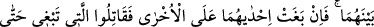
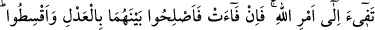
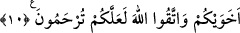

İÇİNİZDE ALLAH’IN
ELÇİSİ VARDIR
6. Ey iman edenler! Eğer bir fâsık size bir haber getirirse onun doğruluğunu
araştırın. Yoksa bilmeden bir topluluğa kötülük edersiniz de sonra yaptığınıza
pişman olursunuz.
7. Hem bilin ki, içinizde Allah’ın elçisi vardır. Şayet o, birçok işlerde size uysaydı,
sıkıntıya düşerdiniz. Fakat Allah size imanı sevdirmiş ve onu gönüllerinize
sindirmiştir. Küfrü, fıskı ve isyanı da size çirkin göstermiştir. İşte doğru yolda
olanlar bunlardır.
8. Bu, Allah’tan bir lütuf ve nimettir. Allah alîmdir, hakîmdir.
9. Eğer müminlerden iki gurup birbirleriyle vuruşurlarsa aralarını düzeltin. Şayet
biri ötekine saldırırsa, Allah’ın buyruğuna dönünceye kadar saldıran tarafla
savaşın. Eğer dönerse artık aralarını adâletle düzeltin ve (her işte) adâletli
davranın. Şüphesiz ki Allah, âdil davrananları sever.
10. Müminler ancak kardeştirler. Öyleyse kardeşlerinizin arasını düzeltin ve
Allah’tan korkun ki esirgenesiniz.
“Ey imân edenler!” herhangi “bir fâsık size” kederlenmeyi gerektiren, üzüntü veren
herhangi “bir haber getirirse…” ifâdesindeki “fâsık” kelimesinin nekre oluşu umûm
ifâde etmek ve her fâsıktan uzak durmanın gerekli olduğunu bildirmek içindir. Âyette